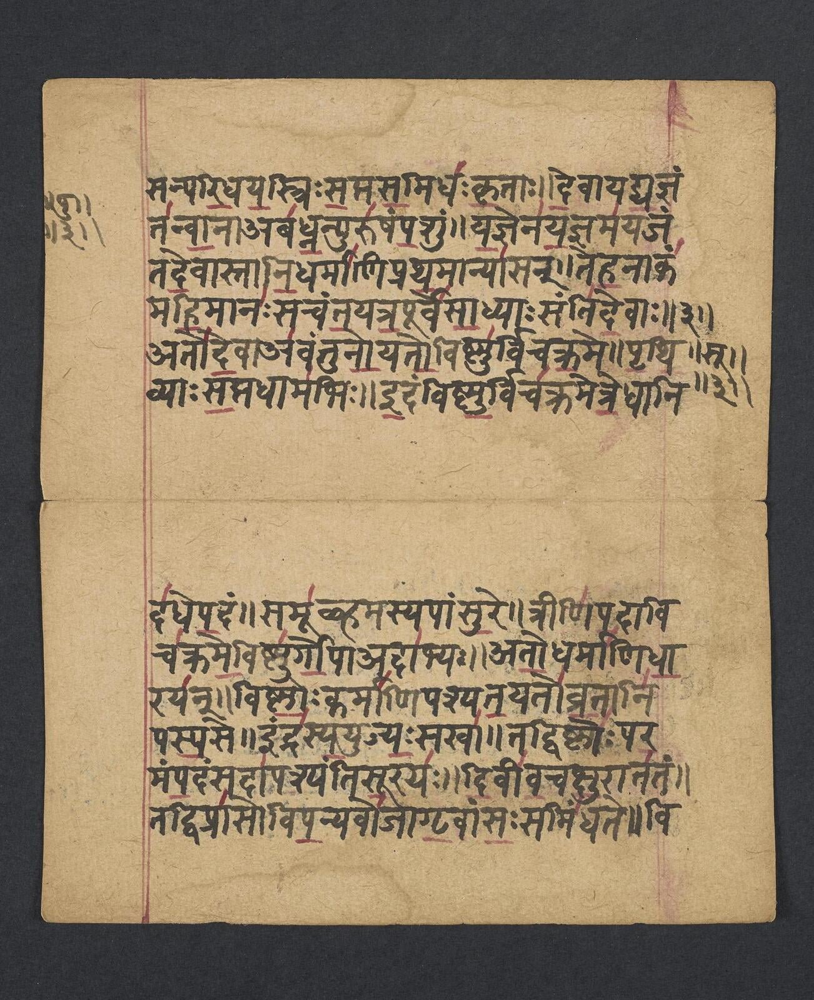

Do Dharma à Confiança: Princípios Eternos, Ações que Transformam.
◆
Sumário
Resumo / Summary—
Prefácio—
Apresentação—
Conto Indiano—
Introdução—
Missão, Visão e Valores—
Aplicação—
Nossas Regras de Conduta—
Relacionamentos Éticos—
Compromissos—
Aplicação e Cumprimento—
Considerações Finais—
Treinamento e Comunicação—
Agradecimentos—
Autores—
☸
Resumo
O Código de Ética da Câmara de Comércio Índia Brasil (CCIB) possui suas raízes na tradição milenar indiana, uma das mais ricas heranças filosóficas e espirituais da humanidade. Seus princípios orientadores são Dharma (dever e retidão), Satya (verdade), Ahimsa (não violência) e Samatva (equilíbrio), representando guias concretos para o agir ético no cotidiano das relações da instituição.
O Código abrange temas como integridade nas relações comerciais, prevenção à corrupção, conflito de interesse, proteção ao patrimônio institucional e respeito às pessoas, ancorando-se na compreensão indiana de que a ética é muito mais do que uma imposição externa; é uma expressão natural do caráter. Esse aspecto é chamado pela tradição védica de antaḥkaraṇa, a voz interior que guia o agir correto.
A Câmara de Comércio Índia Brasil acredita que cada decisão tomada dentro da instituição ecoa além de seus muros, fortalecendo ou enfraquecendo a confiança que sustenta as relações entre Brasil e Índia. Por isso, este Código de Ética representa o svadharma institucional da CCIB, ou seja, o compromisso de agir com coerência entre valores e práticas, construindo pontes comerciais, éticas e culturais entre os dois povos.
Summary
The India Brazil Chamber of Commerce (IBCC) Code of Ethics is rooted in the ancient Indian tradition, one of humanity's richest philosophical and spiritual heritages. Its guiding principles are Dharma (duty and righteousness), Satya (truth), Ahimsa (non-violence) and Samatva (balance), serving guides for ethical conduct in the institution's relations.
The Code covers topics such as integrity in commercial relations, anti-corruption, conflict of interest, protection of institutional assets and respect for people, grounded in the Indian understanding that ethics is far more than an external imposition; it is a natural expression of character. This dimension is referred to in the Vedic tradition as antaḥkaraṇa, the inner voice that guides right action.
The India Brazil Chamber of Commerce believes that every decision made within the institution echoes beyond its walls, either strengthening or weakening the trust that sustains relations between Brazil and India. This Code of Ethics therefore represents the IBCC’s institutional svadharma, that is, the commitment to act with coherence between values and practice, building commercial, ethical and cultural bridges between the two peoples.
Prefácio
Por honroso convite do nosso estimado e competente presidente da Câmara de Comércio e Indústria Índia-Brasil, Leonardo Ananda, tenho o prazer de prefaciar o Código de Ética dessa respeitável entidade que tanto tem contribuído para promover os laços históricos e as relações comerciais e culturais entre os dois países.
Na cultura indiana, a ética é tradicionalmente entendida como algo que vai além do cumprimento de regras. Ela está profundamente ligada ao dever, à harmonia social, ao respeito pelos outros e ao desenvolvimento espiritual. Alguns princípios éticos e morais são bastante valorizados na cultura milenar indiana. Assim, por exemplo: (i) Respeito aos mais velhos, às crianças, aos professores e autoridades, que é visto como um dever moral e social; (ii) Honestidade e integridade nas relações pessoais, profissionais e empresariais; (iii) Autocontrole sobre desejos, emoções e impulsos, que traduz uma elevação espiritual; (iv) Responsabilidade para com a família e a comunidade, que revela a importância do coletivo sobre o egoísmo individualista; e (v) Hospitalidade e generosidade, que demonstra a natureza altruísta e de amor ao próximo em que se assentam as instituições e o convívio social e religioso na Índia.
Assim é que, no ambiente corporativo, especialmente em empresas indianas e multinacionais que atuam na Índia, os códigos de ética e de conduta são amplamente reverenciados e acatados, para fins de promover a transparência e os padrões éticos nos negócios, combater a corrupção, prevenir conflitos de interesses e orientar as decisões profissionais. São normas e princípios de conformação, hoje chamados de compliance, para fins de garantir uma cultura organizacional que transcende cada agente econômico e que repercute na sociedade e no mundo do business development.
No hinduísmo – credo religioso que congrega cerca de 80% da população da Índia, a ética está intimamente relacionada ao conceito de dharma, um dos pilares dessa rica tradição. O dharma pode ser compreendido como o dever moral, a conduta correta e a ordem que sustenta o universo. Agir de acordo com o próprio dharma significa viver de forma ética e responsável, considerando as circunstâncias e os papéis de cada pessoa. Assim, o dharma é o princípio da retidão e dos deveres morais, que incentiva cada indivíduo a agir com responsabilidade, justiça, honestidade e atenção ao próximo. Outro conceito importante na tradição ética da Índia é o Karma, que induz que toda ação humana produz consequências. Nada é por acaso. Boas ações tendem a gerar resultados positivos, enquanto ações prejudiciais produzem consequências negativas, seja nesta vida ou, segundo a tradição indiana, em vidas futuras. Além disso, o conceito de Ahimsa traduz o postulado da não violência que é uma das maiores virtudes do hinduísmo. Por acréscimo, Satya significa um compromisso indelével com a verdade e a sinceridade, de modo que a honestidade e a retidão de caráter e de intenções é considerada uma virtude essencial. Por fim, Seva refere-se ao desprendimento e ao serviço altruísta, realizado sem expectativa de recompensa pessoal, em benefício da sociedade.
Em síntese, - como exposto nas obras clássicas sobre o tema, notadamente a obra de P. H. PRABHU, Hindu Social Organization, e de S. RADHAKRISHNAN, The Hindu view of life, sem esquecer a BHAGAVAD GITA, que é considerada um dos maiores compêndios de filosofia moral da humanidade - tanto na cultura indiana quanto na visão do hinduísmo, a ética não é apenas um conjunto de regras: ela constitui um modo de viver, de promover o bem, de resignar-se e de elevar-se na vida terrena. É um caminho a ser percorrido para gerar relações harmoniosas, o desenvolvimento pessoal e espiritual em prol de uma sociedade mais justa, mais fraterna e mais iluminada.
Numa visão mais universal, o sentido e o alcance da ética insere-se no espaço próprio da filosofia, como concebe ARISTÓTELES em sua “Ética a Nicômaco” (Brasília: Editora UnB, 2011). Esse destaque epistemológico aponta para o conjunto de valores que orientam o comportamento do ser humano em relação a outros seres humanos e à vida em sociedade, pautados em juízos de apreciação suscetíveis de qualificação do ponto vista do bem e do mal. Daí se inferem preceitos éticos, que poderíamos chamar de universais, como procurar agir com justiça, respeitar as leis que sejam justas, não prejudicar os outros, não se apropriar indevidamente do que não é seu, respeitar o convívio social, praticar o amor ao próximo etc. Com base em tais premissas comportamentais, sustenta o filósofo grego que a felicidade é a finalidade das ações humanas, de maneira que a busca da felicidade exterioriza o exercício das virtudes em prol de uma vida feliz, para a criação de um mundo melhor. Nessa coletânea, que reúne dez livros de ARISTÓTELES, o filósofo nascido em Estagira em 384 a.C, que foi discípulo de PLATÃO e mestre de Alexandre - o Grande, considera a virtude ética “uma prática existencial”, ou seja, uma práxis edificante de conduta (de ação ou omissão), que inclina a pessoa para o bem mais essencial da existência, que é a busca da felicidade, pessoal e coletiva.
No campo corporativo e das profissões em geral, compreende-se a ética empresarial e profissional como sendo a aplicação das virtudes humanas que induzem comportamentos benéficos e socialmente desejáveis, de que resulta uma postura transparente e que serve de paradigma às atividades produtivas. Isto significa dizer que, como prescrito neste Código de Ética, que – “decisões influenciadas por interesses pessoais, familiares ou de amigos” desservem ao postulado da ética e da moral empresarial e profissional, além de “comprometer o equilíbrio e a confiança na organização”. Por certo, esses valores que informam a ética nas empresas e nas profissões incluem a honestidade, integridade, respeito, transparência, responsabilidade, solidariedade e justiça. Assim sendo, a ética corporativa e dos quadros profissionais está fundamentada na ideia de que cada corporação e os profissionais de cada categoria laborativa devem agir de acordo com um conjunto de normas, de princípios e de valores estabelecidos em prol da comunidade em que atuam, de maneira a exteriorizar um grau de excelência e de exemplaridade na sua atuação empresarial e profissional.
No plano das instituições, como no caso da nossa querida Câmara de Comércio e Indústria Índia-Brasil, este Código de Ética, em boa hora aprovado pela Diretoria e pelo Conselho de Administração de nossa entidade, corporifica um conjunto de normas, princípios, valores e missão a orientar a atuação da nossa Câmara, de seu quadro dirigente e de nossos estimados associados - tanto empresas brasileiras quanto empresas indianas - com interesses e afeições tangíveis e intangíveis no eixo Índia-Brasil. Cabe-nos uma postura de liderança no sentido indiano e espiritual da expressão, sabido que a liderança é um dever que exige sabedoria e exemplo. Liderar é servir, ensinar e inspirar, segundo o princípio do guru-shishya parampara, que traduz a relação tradicional entre mestre e aprendiz. Resta desejar que esse Código de Ética possa ser útil e referencial para todos nós, eis que prodigamente inspirado nas melhores e mais legítimas tradições culturais, políticas, econômicas e de amizade entre os dois povos e os dois países que tanto amamos e de que nos orgulhamos de servir e representar.
Carlos Roberto Siqueira Castro
Apresentação
Monge indiano em meditação
Recordo-me de uma tradição familiar que marcou profundamente a minha infância: duas ou três vezes ao ano, recebíamos em nossa casa um Swami, monge indiano, que nos concedia a honra de permanecer alguns dias conosco e de compartilhar ensinamentos milenares oriundos das escrituras sagradas da Índia. Foi nesse contexto que comecei a ter meus primeiros contatos com a Vedanta, tradição filosófica que busca compreender a natureza da realidade, da consciência e do dever humano.
Como outras crianças também participavam desses encontros auspiciosos, um desses Swamis fazia questão de iniciar as reuniões convidando-nos a ouvir e compartilhar contos milenares indianos. Por meio de analogias simples e diretas, essas narrativas transmitiam ensinamentos profundos, de maneira acessível e memorável. Um desses contos, em especial, marcou-me intensamente e revela-se extremamente pertinente para a introdução deste Código de Ética.
O conto era, mais ou menos o seguinte:
Há muitos e muitos anos, nas alturas silenciosas do Himalaia, existia um antigo monastério, erguido sobre rochas ancestrais e envolto por neves eternas. Ali viviam monges profundamente respeitados, não apenas pela austeridade de suas vidas, mas pela sabedoria milenar que preservavam e transmitiam. O monastério era conhecido em toda a Índia como um centro de ensinamentos elevados, onde o Dharma era vivido, e não apenas ensinado.
O tempo, porém, é implacável até mesmo com os lugares sagrados. As paredes do monastério, castigadas pelos ventos gelados e por décadas de escassez material, encontravam-se frágeis. O telhado cedia em alguns pontos, os corredores apresentavam rachaduras, e os espaços destinados ao estudo e à meditação já não ofereciam segurança. Sua localização remota, no alto das montanhas, tornava qualquer reparo extremamente difícil e oneroso. Faltavam recursos, e a própria continuidade do monastério começava a ser ameaçada.
Diante dessa situação, o venerável mestre — líder espiritual do monastério e figura amplamente respeitada — convocou seus discípulos. Reunidos no pátio central, os jovens monges ouviram atentamente enquanto o mestre explicava a gravidade do momento. Disse-lhes que, se nada fosse feito, os ensinamentos ali preservados por séculos poderiam se perder.
Após um longo silêncio, o mestre fez uma proposta inesperada.
Havia dois vilarejos relativamente próximos, embora separados por trilhas difíceis. O mestre ordenou que seus discípulos fossem até esses vilarejos e furtassem o que conseguissem. Os bens retirados de um vilarejo deveriam ser vendidos no outro, e os recursos obtidos seriam destinados exclusivamente à restauração do monastério. Segundo ele, tratava-se de um sacrifício necessário, justificado pelo bem maior: a preservação do conhecimento sagrado e da tradição espiritual.
No entanto, o mestre impôs uma condição rigorosa: — Vocês podem cumprir essa missão — disse ele —, mas ninguém pode vê-los. Ninguém deve saber que monges deste monastério, tão antigo e respeitado em toda a Índia, cometeram tais atos. Se forem vistos, falharão.
Fiéis à autoridade do mestre, quase todos os discípulos partiram imediatamente, convencidos de que estavam agindo em nome de uma causa nobre.
Alguns dias depois, o mestre percebeu que um dos jovens monges permanecia no monastério. Aproximou-se dele e perguntou, com voz firme: — Por que você não foi com os outros? Por que não seguiu minhas orientações? Não compreende a gravidade da situação em que nos encontramos?
O jovem monge inclinou a cabeça em sinal de respeito e respondeu com serenidade: — Mestre, eu não desobedeci. Estou seguindo exatamente a sua orientação.
Intrigado, contemplativo e bastante interessado, o mestre insistiu: — Como pode dizer isso, se não saiu para cumprir a missão?
Então o discípulo respondeu: — O senhor disse que a missão só poderia ser cumprida se ninguém visse o que fizéssemos. Mas isso é impossível. Ainda que nenhum homem me veja, eu verei. A minha consciência saberá. E se a minha consciência sabe, então alguém sabe. Portanto, não posso cumprir essa missão sem ser visto.
O mestre permaneceu em silêncio. Dizem que, naquele instante, compreendeu que o verdadeiro ensinamento não estava na preservação das paredes do monastério, mas na retidão silenciosa daquele discípulo.
Pois o Dharma não se mede pela justificativa dos fins, mas pela pureza do agir.
E não há esconderijo possível quando a consciência é testemunha.
Gandhi ensinava que "os meios são tão importantes quanto os fins" e que a verdade deve ser o fundamento de toda ação que aspire à legitimidade.
Desde tempos imemoriais, a tradição indiana reconhece que a vida individual, social e institucional deve ser guiada por um princípio maior de ordem, verdade e responsabilidade. Esse princípio é conhecido como Sanatana Dharma — a lei eterna que sustenta o equilíbrio do universo e orienta o agir humano para além das circunstâncias, interesses ou conveniências momentâneas. Não se trata apenas de um conjunto de regras, mas de um chamado permanente à retidão, à coerência entre pensamento, palavra e ação, e ao compromisso com o bem comum.
Ao instituir este Código de Conduta Ética, a Câmara de Comércio Índia Brasil (CCIB) reconhece que sua atuação se insere nesse horizonte mais amplo de responsabilidade histórica, cultural e moral. Assim como o Sanatana Dharma ensina que cada ser possui um dever próprio (svadharma), inseparável do impacto de suas ações sobre o todo, a CCIB afirma que a ética corporativa é expressão viva de seu propósito institucional e da consciência coletiva que sustenta suas relações.
Mahatma Gandhi ensinava que "os meios são tão importantes quanto os fins" e que a verdade (satya) deve ser o fundamento de toda ação que aspire à legitimidade. Para ele, não há progresso verdadeiro quando a integridade é sacrificada em nome de resultados imediatos. Inspirada por esse ensinamento, a CCIB compreende que sua credibilidade, sua reputação e sua contribuição para a sociedade dependem da pureza de seus meios, da transparência de suas decisões e do respeito incondicional à dignidade humana.
Swami Vivekananda, por sua vez, lembrava que a moralidade não é um ornamento da vida social, mas o seu alicerce. Para ele, a verdadeira força de uma instituição nasce da coerência entre os valores professados e as práticas cotidianas. Nesse espírito, este Código não se apresenta como um instrumento meramente normativo, mas como um guia de consciência, destinado a orientar escolhas, comportamentos e relações, tanto internas quanto externas, em consonância com elevados padrões éticos.
O épico Ramayana, fonte perene de sabedoria e uma das mais notáveis obras da literatura espiritual da humanidade, ensina que o verdadeiro líder é aquele que permanece fiel ao Dharma mesmo diante das maiores provações. O príncipe Rama, ao escolher o dever em detrimento da conveniência pessoal, demonstra que a integridade exige constância, coragem e disposição para servir a algo maior do que o interesse individual. Essa lição ecoa no contexto institucional da CCIB, onde liderar significa dar exemplo, agir com justiça e preservar o equilíbrio entre firmeza e compaixão.
Este Código de Conduta Ética nasce, portanto, como uma expressão contemporânea desses ensinamentos milenares, traduzidos para o contexto das relações empresariais, institucionais e interculturais que unem Brasil e Índia. Ele reflete a convicção de que a ética não é um limite à ação, mas a sua orientação mais elevada; não é um obstáculo ao crescimento, mas a condição para um desenvolvimento sustentável, legítimo e compartilhado.
Ao adotar este Código, cada colaborador, dirigente, associado e parceiro da CCIB é convidado a reconhecer seu papel como guardião do Dharma institucional — agindo com verdade, equilíbrio, responsabilidade e espírito de serviço. Assim, a CCIB reafirma seu compromisso de construir pontes não apenas comerciais, mas também morais e culturais, honrando a herança espiritual da Índia e os valores universais que sustentam uma convivência justa, íntegra e harmoniosa entre os povos.
"Dharmo Rakshati Rakshitah" (धर्मो रक्षति रक्षित)
* Frase célebre gravada nos tribunais indianos
Leonardo Ananda Gomes
Fundador e CEO da Câmara de Comércio Índia Brasil Cônsul Honorário da Índia no Rio de Janeiro (2017-2025)
Taj Mahal, Agra — símbolo eterno do amor e da perfeição arquitetônica indiana
Conto Indiano
Há muitos e muitos anos, nas alturas silenciosas do Himalaia, existia um antigo monastério, erguido sobre rochas ancestrais e envolto por neves eternas. Ali viviam monges profundamente respeitados, não apenas pela austeridade de sua vida, mas pela sabedoria milenar que preservavam e transmitiam.
O monastério era conhecido em toda a Índia como um centro de ensinamentos elevados, onde o Dharma era vivido, não apenas ensinado. O tempo, porém, é implacável até mesmo com os lugares sagrados. As paredes do monastério, castigadas pelos ventos gelados e pelas décadas de abandono material, encontravam-se frágeis. O telhado cedia em alguns pontos, os corredores apresentavam rachaduras, e os espaços destinados ao estudo e à meditação já não ofereciam segurança. A localização remota, no alto das montanhas, tornava qualquer reparo extremamente difícil e custoso. Faltavam recursos, e a continuidade do próprio monastério começava a ser ameaçada.
Cordilheira do Himalaia
Diante dessa situação, o venerável mestre — líder espiritual do monastério e figura amplamente respeitada — convocou seus discípulos. Reunidos no pátio central, os jovens monges ouviram atentamente enquanto o mestre explicava a gravidade da situação. Disse-lhes que, se nada fosse feito, os ensinamentos ali preservados por séculos poderiam se perder.
Então, após um longo silêncio, o mestre fez uma proposta inesperada.
Havia dois vilarejos relativamente próximos, embora separados por trilhas difíceis. O mestre ordenou que seus discípulos fossem até esses vilarejos e furtassem o que conseguissem. Os bens retirados de um vilarejo deveriam ser vendidos no outro, e os recursos obtidos seriam destinados exclusivamente à restauração do monastério. Segundo ele, tratava-se de um sacrifício necessário, justificado pelo bem maior: a preservação do conhecimento sagrado e da tradição espiritual.
!
No entanto, o mestre impôs uma condição rigorosa: — Vocês podem cumprir essa missão — disse ele —, mas ninguém pode vê-los. Ninguém deve saber que monges deste monastério, conhecido e respeitado em toda a Índia, cometeram tais atos. Se forem vistos, falharão.
Fiéis à autoridade do mestre, quase todos os discípulos partiram imediatamente, convencidos de que estavam agindo em nome de uma causa nobre.
Passados alguns dias, o mestre percebeu que um dos jovens monges permanecia no monastério. Aproximou-se dele e perguntou, com voz firme:
— Por que você não foi com os outros? Por que desobedeceu à minha orientação? Não compreende a gravidade da situação em que nos encontramos?
O jovem monge inclinou a cabeça em sinal de respeito e respondeu com serenidade:
— Mestre, eu não desobedeci. Estou seguindo exatamente a sua orientação.
Intrigado, e muito interessado o mestre insistiu:
— Como pode dizer isso, se não saiu para cumprir a missão?
Então o discípulo respondeu:
— O senhor disse que a missão só poderia ser cumprida se ninguém visse o que fizéssemos. Mas isso é impossível. Ainda que nenhum homem me veja, eu verei. A minha consciência saberá. E se a minha consciência sabe, então alguém sabe. Portanto, não posso cumprir essa missão sem ser visto.
O mestre permaneceu em silêncio. Dizem que, naquele instante, compreendeu que o verdadeiro ensinamento não estava na preservação das paredes do monastério, mas na retidão silenciosa daquele discípulo.
Pois o Dharma não se mede pela justificativa dos fins, mas pela pureza do agir. E não há esconderijo possível quando a consciência é testemunha.

❝
“O comércio aproxima economias; a ética aproxima pessoas.”
— Câmara de Comércio Índia Brasil —
☸
Introdução
O crescimento e o desenvolvimento da Câmara de Comércio Índia Brasil (CCIB) refletem o compromisso de nossos colaboradores com a integridade, a sabedoria e a cooperação — valores que unem duas culturas com profundas tradições éticas e espirituais.
A CCIB se inspira nos princípios milenares da cultura indiana, reconhecendo que a ética corporativa vai além do cumprimento de regras, pois ela expressa, diariamente, o nosso dharma.
Buscamos construir um ambiente de trabalho acolhedor, colaborativo e transparente, guiados por valores como satya (verdade), ahimsa (não violência e respeito ao outro), seva (espírito de serviço) e samatva (equilíbrio e harmonia). Cada colaborador, associado e parceiro é convidado a agir com honestidade e empatia, reconhecendo que suas ações têm impacto direto no todo.
Este Código de Ética nasce, portanto, como um instrumento de alinhamento entre nossos valores e nossas práticas, servindo como guia para decisões éticas, relações respeitosas e condutas que reforcem a confiança e a integridade que sustentam a CCIB.
Mais do que um conjunto de normas, este Código representa uma filosofia de conduta, ou seja, um compromisso com o agir correto, em harmonia com os valores que inspiram a parceria entre o Brasil e a Índia.
Missão, Visão e Valores
Missão
Atuar de acordo com a Visão e os Valores da instituição, gerando oportunidades e promovendo negócios para nossos associados, contribuindo para o fortalecimento da relação comercial e cultural entre Índia e Brasil.
Visão
Ser referência no fomento das relações comerciais e culturais entre Brasil e Índia por meio de produtos e serviços diferenciados e inovadores.
A Missão, Visão e Valores da CCIB refletem o espírito de equilíbrio e propósito presente na cultura indiana. Nossa missão representa o dharma. Nossa visão expressa o princípio de vasudhaiva kutumbakam. E nossos valores, quando vividos com autenticidade, tornam-se uma prática de karma yoga.
Assim, cada projeto, decisão e parceria da CCIB é guiado por essa filosofia: agir com excelência e integridade, inovar com propósito e segurança, e servir com empatia, dinamismo e proatividade, reconhecendo que o verdadeiro sucesso é aquele que promove prosperidade compartilhada e harmonia entre os povos.
Mumbai — principal centro financeiro e cidade cosmopolita da Índia
🪷
Aplicação
O presente Código de Ética e Conduta se aplica a todos os colaboradores, parceiros, associados e fornecedores da Câmara de Comércio Índia Brasil (CCIB), que têm a responsabilidade de atuar em conformidade com as normas aqui previstas, independentemente de seu cargo, função ou tempo de serviço.
Na tradição indiana, a ética não é apenas um conjunto de regras, mas um caminho de conduta justa — como ensinava Chanakya, conselheiro e filósofo do século IV a.C., "a liderança é um dever que exige sabedoria e exemplo". Assim, aqueles que ocupam posições de liderança na CCIB têm um dever adicional: ser guias pelo exemplo, inspirando suas equipes por meio da coerência entre palavra e ação. Devem orientar com clareza, promover a disseminação dos valores institucionais e cultivar um ambiente de aprendizado ético e respeitoso.
☸
Esse compromisso reflete o princípio do guru-shishya parampara, a relação tradicional entre mestre e aprendiz, baseada em confiança, respeito e transmissão de conhecimento. Liderar, portanto, é servir, ensinar e inspirar.
O mercado de fornecedores, parceiros e prestadores de serviço possui suas próprias regras. Entretanto, a CCIB compreende a cooperação como uma via de reciprocidade ética, em que o sucesso só é pleno quando todos os envolvidos compartilham princípios comuns.
Tal postura reflete o ideal de samatva, o equilíbrio entre firmeza e respeito (agir com justiça), mas também com sensibilidade, assegurando que nossas decisões estejam sempre em sintonia com a ética e com o espírito de cooperação que unem o Brasil e a Índia.
A sabedoria milenar como guia para a conduta ética contemporânea
ॐ
Nossas Regras de Conduta
Política Anticorrupção
Integridade e transparência
A Câmara de Comércio Índia Brasil (CCIB) mantém tolerância zero a qualquer forma de corrupção. Inspirada nos princípios de Mahatma Gandhi, a CCIB compreende que a verdadeira força ética de uma organização nasce da verdade (satya) e da não violência (ahimsa), ou seja, da recusa em causar dano moral, material ou institucional em busca de vantagens indevidas.
Nenhum colaborador, Conselheiro, Diretor, parceiro ou representante da CCIB poderá ofertar, prometer, doar, aceitar ou solicitar qualquer vantagem indevida, seja de natureza financeira ou não, direta ou indireta, em qualquer circunstância, sempre em observância às leis e regulamentos aplicáveis.
Gandhi acreditava que a pureza dos meios é tão importante quanto a nobreza dos fins, e que a honestidade é o primeiro dever de quem serve à coletividade.
Seguindo o exemplo de Gandhi, a CCIB reitera seu compromisso de que o progresso e o desenvolvimento só têm valor quando alcançados com honestidade, construindo uma reputação baseada em confiança, retidão e respeito mútuo.
Cada colaborador é chamado a ser guardião desses valores, cultivando uma cultura de transparência e responsabilidade, que assegura a credibilidade da CCIB e contribui para o fortalecimento de um ambiente ético e sustentável nas relações entre Índia e Brasil.
Atenção às Leis e aos Procedimentos Internos
Para que possamos contribuir efetivamente com o crescimento da Câmara de Comércio Índia Brasil (CCIB) e, consequentemente, com o desenvolvimento do país, é fundamental agir com honestidade e pleno respeito à legislação vigente.
No desempenho de nossas atividades diárias, temos o dever de seguir rigorosamente políticas e procedimentos internos da organização. Esse cuidado se inspira no legado de Raja Ram Mohan Roy, que destacou a importância da ética, da transparência e da reforma social para a construção de instituições justas e confiáveis.
É essencial manter suas informações pessoais atualizadas junto à organização e assegurar que orçamentos, relatórios de despesas, comprovantes, estudos, ordens de serviço e demais documentos estejam sempre corretos e completos. Assim, poderemos nos inspirar no conceito de artha, a responsabilidade ética de atuar com propósito, zelo e atenção aos impactos de nossas ações sobre o coletivo.
Ao zelar pelo manuseio e guarda adequados dos documentos da CCIB, cada colaborador contribui para a construção de uma organização transparente, íntegra e harmoniosa.
Conflito de Interesse
Na Câmara de Comércio Índia Brasil (CCIB), cada colaborador é chamado a agir com integridade, discernimento e responsabilidade, reconhecendo que decisões influenciadas por interesses pessoais, familiares ou de amigos podem comprometer o equilíbrio e a confiança da organização.
No exercício de suas funções, devemos observar cuidadosamente situações que possam gerar conflito de interesse, tais como:
Contratação de fornecedores ou prestadores de serviço com vínculos pessoais, sem comunicar previamente a organização. Tal ação contraria o princípio de dharma, que orienta a colocar o bem coletivo acima de interesses individuais;
Aceitar brindes, presentes ou favores que possam influenciar decisões. Aqui, aplica-se o conceito de samatva, ou seja, equilíbrio e imparcialidade na tomada de decisões;
Contratar familiares, amigos ou solicitar que outros colaboradores o façam sem seguir os processos internos. Este cuidado reflete a ética administrativa de Chanakya, que ensinava que líderes devem separar interesses pessoais da gestão de recursos e decisões estratégicas;
Exercer atividades externas que possam prejudicar o desempenho na CCIB ou influenciar negativamente decisões internas, mantendo a dedicação e o compromisso, inspirado em shraddha;
Divulgar informações confidenciais ou utilizá-las para benefício próprio ou de terceiros, lembrando que a transparência e a confiança são a base de toda relação ética;
Disseminar informações inverídicas que prejudiquem colaboradores, parceiros ou a organização, contrariando o princípio de satya, a verdade como guia inegociável da conduta.
A mera possibilidade de conflito deve ser comunicada à Alta Direção, por meio dos canais apropriados, prevenindo impactos negativos e preservando a reputação da CCIB. Situações específicas devem ser comunicadas imediatamente aos Compliance Officers, permitindo análise e adoção de medidas corretivas. Isso reforça a confiança e integridade da CCIB.
Respeito com as Pessoas
O espírito do namastê reconhece em cada ser humano uma centelha de valor e dignidade.
O respeito mútuo é a base de nossas relações e reflete o espírito do namastê, saudação tradicional indiana que reconhece em cada ser humano uma centelha de valor e dignidade. Assim, cada colaborador é convidado a agir com empatia, escuta ativa e consideração, compreendendo que o verdadeiro progresso nasce da harmonia e do reconhecimento do outro.
Os diálogos devem ser sempre pautados pelo respeito, e qualquer forma de abuso de poder, assédio moral, sexual, político ou religioso, bem como atos de violência física ou verbal, são expressamente proibidos e não serão tolerados.
Cuidado com a Nossa Marca e Reputação
Assim como a flor de lótus, que floresce pura e bela mesmo nas águas turvas, a Câmara de Comércio Índia Brasil deve preservar sua imagem e reputação com integridade, transparência e ética em todas as suas ações.
Cada colaborador representa a instituição e tem o dever de zelar para que suas atitudes, comunicações e decisões reforcem a confiança e o respeito conquistados pela CCIB. A lótus nos inspira a agir com serenidade e propósito, mesmo diante de desafios ou situações adversas.
☸
Brindes, Presentes e Hospitalidades
Na cultura indiana, o princípio Atithi Devo Bhava traz a ideia de que "O convidado é como um deus", ensinando que a verdadeira cortesia nasce da pureza de intenções e do respeito. Tomando como base esse valor, a Câmara de Comércio Índia Brasil entende que a hospitalidade deve ser pautada nos seguintes pontos:
Não é recomendado o recebimento de presentes de caráter pessoal, tais como joias, produtos eletrônicos, viagens pessoais ou quaisquer outros bens que não tenham relação direta com as atividades corporativas.
Presentes de natureza corporativa, como produtos institucionais, artesanatos, livros ou itens culturais típicos (como pashminas e lenços), poderão ser aceitos, desde que o colaborador comunique o recebimento aos Compliance Officers e realize o devido registro.
Brindes ou materiais promocionais, de baixo valor e distribuídos de forma generalizada, poderão ser aceitos sem necessidade de comunicação ou registro.
A oferta de presentes por colaboradores da CCIB deve ser estritamente limitada a itens de caráter corporativo, com moderação e sem frequência elevada, buscando prevenir qualquer percepção de favorecimento ou conflito de interesse.
Caso haja necessidade de recebimento de um presente, é obrigatório o seu registro. Em caso de dúvidas, o colaborador deve procurar orientação junto aos Compliance Officers.
Assim como ensina a tradição indiana, o valor de um gesto não está em sua materialidade, mas na sinceridade e na ética com que é oferecido. A prática do Atithi Devo Bhava nos lembra que o verdadeiro respeito nas relações empresariais e pessoais nasce do equilíbrio entre cortesia e responsabilidade.
Participação Política
Assim como as águas do Rio Ganges correm em direção ao mar, acolhendo diversos afluentes, mas mantendo sua essência pura e contínua, cada colaborador da Câmara de Comércio Índia Brasil (CCIB) é livre para seguir as suas próprias convicções políticas, com respeito e consciência ética.
No entanto, é dever de todos preservar a clareza desse fluxo coletivo: os espaços e recursos da CCIB não devem ser utilizados para fins políticos, partidários ou ideológicos. Essa separação garante que o ambiente institucional permaneça imparcial e dedicado ao bem comum.
Somente os representantes formalmente designados estão autorizados a se manifestar em nome da organização, zelando para que a voz institucional reflita equilíbrio e responsabilidade.
A CCIB busca contribuir para o desenvolvimento sustentável das relações entre Índia e Brasil, mantendo sua atuação independente e guiada pelos valores de integridade e equilíbrio, que também inspiram o curso sagrado do Ganges.
Proteção de Nosso Patrimônio, Recursos e Informações
Os bens, recursos e informações da Câmara de Comércio Índia Brasil (CCIB) são os alicerces que sustentam nossa missão. Assim como na arquitetura dos templos e palácios da Índia, onde cada pedra, cada escultura e cada detalhe têm propósito e significado, o patrimônio da CCIB deve ser tratado com zelo, responsabilidade e reverência.
Os bens e equipamentos da organização devem ser utilizados apenas para fins profissionais, com atenção à eficiência, à sustentabilidade e à contenção de desperdícios. Todo recurso físico, financeiro ou informacional deve ter destinação adequada, podendo ser designado para uso, venda ou doação, conforme as normas internas.
◆
A gestão financeira e contábil deve refletir o mesmo senso de equilíbrio. Os registros devem ser precisos, transparentes e elaborados com rigor ético, garantindo que cada movimentação e cada decisão financeira expressem o compromisso da CCIB com a integridade e a conformidade.
Aqueles que têm acesso a valores ou contas da organização são guardiões desse equilíbrio, devendo agir com prudência para evitar perdas, riscos ou distorções.
As informações produzidas e armazenadas também integram o patrimônio institucional e devem ser protegidas com o mesmo cuidado. Logins e senhas são de uso individual, intransferível, e sua confidencialidade é essencial.
Cuidar dos recursos da CCIB é, portanto, um ato de dharma (dever ético de agir com consciência coletiva). Assim, construímos uma organização sólida e digna da confiança que a une aos valores da Índia e do Brasil.
Fusões e Aquisições
Nos casos em que a Câmara de Comércio Índia Brasil participar de fusões, aquisições ou outras operações societárias, estas deverão ser conduzidas em estrita conformidade com a legislação e com as normas internas, visando à identificação e prevenção de riscos de corrupção, suborno, fraude e outros desvios éticos. A CCIB realizará auditorias prévias detalhadas, capazes de verificar a situação das empresas-alvo, avaliar suas práticas e seu histórico reputacionais, para que as decisões possam ser tomadas de forma segura e responsável.
Assim como no chaturanga, o xadrez de origem indiana, em que cada movimento é planejado com estratégia e visão de longo prazo, cada etapa de uma fusão ou aquisição deve ser conduzida com cuidado e atenção às consequências futuras. Dessa forma, a CCIB assegura que suas decisões fortaleçam a organização, preservando seus valores e a confiança de todos os stakeholders.
Combate à Lavagem de Dinheiro e ao Terrorismo
A Câmara de Comércio Índia Brasil (CCIB) mantém rígidos controles para prevenção à Lavagem de Dinheiro, crime previsto na Lei nº 9.613/1998, que consiste em ocultar ou dissimular a natureza, origem, localização, disposição ou movimentação de bens, direitos ou valores provenientes de atos ilícitos. A CCIB adota política de tolerância zero a transações baseadas em atividades ilegais.
Assim como o tecido delicado de um sari ou as linhas entrelaçadas de uma tapeçaria tradicional, cada registro, cada recurso e cada operação na CCIB deve ser tratado com cuidado, atenção e precisão. Um fio solto ou uma linha mal posicionada pode comprometer a construção e a integridade do conjunto; da mesma forma, uma operação irregular pode colocar em risco a confiabilidade e a reputação da organização.
Cada colaborador tem o dever ético de agir com integridade e transparência, garantindo que todas as movimentações financeiras e registros contábeis estejam em plena conformidade com a legislação vigente e com os procedimentos internos da CCIB. Além disso, os colaboradores devem estar constantemente atentos aos sinais de atividades suspeitas e comunicar imediatamente qualquer operação que possa envolver lavagem de dinheiro ou financiamento ao terrorismo. Essa vigilância contribui para preservar a harmonia e a solidez da organização.
O compromisso com a precisão e a clareza em cada transação fortalece a confiança de parceiros, clientes e da sociedade, garantindo que a CCIB continue a operar de maneira íntegra e sustentável, conforme os valores da cultura indiana as boas práticas corporativas.
A construção de pontes comerciais e culturais entre Índia e Brasil
Relacionamentos Éticos
A Câmara de Comércio Índia Brasil (CCIB) entende que a construção de relacionamentos éticos é fundamental para a confiança e sustentabilidade de suas atividades. Esses relacionamentos envolvem nossos associados e clientes; fornecedores e parceiros, órgãos de classe e entidades representativas; concorrentes e órgãos públicos. A CCIB valoriza a atenção e o respeito em todas as interações, de maneira que todos são sempre convidados especiais e devem ser tratados com cortesia e integridade.
Assim como as linhas entrelaçadas de um tapete tradicional indiano formam um desenho harmônico e resistente, cada interação profissional deve ser conduzida com delicadeza e atenção aos detalhes, contribuindo para relações confiáveis e duradouras.
Portanto, a CCIB se compromete a observar as orientações presentes nos códigos das organizações com as quais se relaciona, desde que não haja conflito com este documento, e exige respeito e comprometimento mútuo.
Relacionamento com Clientes e Associados
Seguindo o espírito da hospitalidade indiana, cada cliente e associado deve ser recebido e atendido com atenção, cuidado e respeito. Os colaboradores da CCIB assumem o compromisso de observar prazos e garantir a qualidade do trabalho de maneira consistente e transparente.
Assim como um anfitrião que prepara cuidadosamente um tapete para receber seus convidados, cada interação nos ambientes de clientes ou empresas associadas deve ser conduzida com integridade, zelando pela reputação de todos os envolvidos. Cada gesto e cada entrega refletem o nosso profissionalismo e também os valores que unem o tecido da CCIB, reforçando a confiança e a colaboração mútua.
A sinergia com empresas associadas é construída a partir de condutas que demonstram nossa integridade. Atuamos de acordo com os contratos estabelecidos e convidamos nossos associados a caminharem conosco na mitigação de riscos e no compromisso mútuo com a confidencialidade e integridade.
Relacionamento com Fornecedores e Parceiros de Negócios
Fornecedores e parceiros merecem nosso reconhecimento e respeito, dado que são essenciais para que possamos atingir nossos objetivos. Para que sejamos justos em sua contratação, garantimos igualdade de condições entre os interessados e conduzimos processos de seleção com base em critérios técnicos e de compliance. Valorizamos e estimulamos comportamentos que contribuam para a manutenção de um ambiente corporativo íntegro.
Todo colaborador é responsável pelo trabalho desenvolvido por nossos fornecedores e parceiros, orientando-os adequadamente e zelando para que produtos e serviços sejam entregues com a qualidade esperada e dentro dos prazos estipulados.
Relacionamento com Órgãos de Classe e Entidades Representativas
Respeitando o direito à livre associação e guiados pelo princípio da hospitalidade indiana, a CCIB valoriza o diálogo transparente e construtivo como instrumento de negociação e cooperação. Todas as interações com órgãos de classe e entidades representativas devem ser conduzidas de forma organizada e ética, sendo que os interlocutores oficiais da CCIB são sempre os membros da diretoria ou profissionais designados para essa atividade, garantindo clareza e alinhamento com nossos valores.
Relacionamento com Concorrentes
Com base no espírito da hospitalidade indiana, a CCIB espera que seus concorrentes adotem práticas éticas e leais em suas atividades.
Nossos colaboradores e parceiros devem sempre preservar a imagem e o nome de concorrentes, evitando relações inadequadas ou condutas que comprometam a integridade do mercado. É expressamente proibida a troca de informações confidenciais, como preços, custos, margens, ou a realização de acordos informais que possam afetar a concorrência de forma desleal.
Dessa forma, garantimos que a competitividade seja conduzida com respeito e transparência, refletindo, claramente, os valores da instituição.
Relacionamento com Agentes e Órgãos Públicos
Swami Vivekananda pregava que "a verdade é a base de toda moralidade".
Inspirada nos ensinamentos de Swami Vivekananda, que pregava que "a verdade é a base de toda moralidade", a Câmara de Comércio Índia Brasil reforça seu compromisso com a integridade e o serviço ao bem comum.
A CCIB não tolera, nem admite, sob nenhuma circunstância, atos ou omissões que configurem corrupção ou improbidade administrativa. A prática de corrupção é crime e contraria diretamente os valores e os princípios que sustentam nossa atuação institucional.
Toda interação com agentes e órgãos públicos deve ocorrer de forma transparente e sempre em prol da sociedade. Somente colaboradores devidamente autorizados podem representar a CCIB nessas relações, observando integralmente as leis e regulamentos anticorrupção.
Em processos de contratação pública, a CCIB segue rigorosamente as regras legais, prevenindo fraudes e assegurando a lisura de cada etapa. Qualquer suspeita de irregularidade será apurada com seriedade pela Função de Compliance e pelo Comitê de Ética, que possuem autonomia para interromper imediatamente qualquer ato ilícito e adotar as medidas cabíveis.
A promessa, oferta ou doação de vantagem indevida a agente público não é admitida. Presentes, brindes ou hospitalidades somente serão oferecidos se expressamente autorizados por norma pública.
Tal como Vivekananda acreditava que a verdadeira grandeza nasce da honestidade e da retidão, a CCIB conduz suas relações com o poder público sobre os mesmos valores, ou seja, a verdade e a dignidade.
❝
“Culturas diferentes ampliam horizontes; valores compartilhados constroem pontes.”
— Câmara de Comércio Índia Brasil —
🪷
Compromissos
A Câmara de Comércio Índia Brasil atua em conformidade com os princípios de responsabilidade social e inspira-se em valores universais de respeito e dignidade humana, presentes no pensamento de Mahatma Gandhi, para orientar seus colaboradores a agirem com integridade e senso de justiça.
I Repúdio ao Preconceito e à Discriminação
A instituição é guiada pelo ideal gandhiano de que "a nossa humanidade é medida pelo modo como tratamos o outro", ou seja, repudia o preconceito e compromete-se a construir um ambiente de trabalho inclusivo, no qual raça, cor, sexo, religião, nacionalidade, orientação sexual, idade, convicção política ou limitação física jamais sejam motivo de discriminação.
II Oportunidades Iguais
Com base na visão de igualdade defendida por Gandhi, o crescimento na CCIB e a avaliação de colaboradores em processos seletivos internos baseiam-se exclusivamente em mérito, desempenho e qualidade dos trabalhos desempenhados. A CCIB assegura oportunidades iguais a todos que aqui atuam e mantém o compromisso com aqueles que desejam integrar nosso quadro de colaboradores.
III Trabalho Escravo, Forçado e/ou Infantil
A instituição acredita que o trabalho deve ser sempre pautado nos princípios de dignidade, liberdade e respeito. Portanto, qualquer prática que configure trabalho escravo, forçado ou infantil é contrária aos valores humanos e éticos da CCIB e não será tolerada.
IV Prevenção e Combate ao Assédio Moral, Sexual, Religioso ou Político
A Câmara de Comércio Índia Brasil repudia qualquer forma de assédio ou comportamento que promova hostilidade, perseguição, intimidação, imposição de crenças ou pressões indevidas. A CCIB possui compromisso com um ambiente de trabalho onde o respeito mútuo, a tolerância e a empatia sejam fios condutores de todas as relações, inspirando-se no princípio gandhiano de Ahimsa, que se trata da não violência em todas as suas formas.
Aplicação e Cumprimento do Código de Conduta Ética
A aplicação deste Código é responsabilidade de todos nós. Na Câmara de Comércio Índia Brasil, acreditamos que a conduta ética não é uma obrigação individual isolada, mas um compromisso coletivo que reflete a interdependência (valor chave na cultura indiana) entre colaboradores, parceiros, instituições e a sociedade em que atuamos.
Cada atitude influencia o todo. Assim como ensinam as tradições filosóficas indianas, nossas ações devem considerar o impacto que produzem no outro e no ambiente de trabalho. Agir eticamente é compreender que o desenvolvimento da CCIB está ligado à conduta responsável de cada pessoa que a representa.
O cumprimento deste Código é essencial para fortalecer a confiança nas relações, a transparência e a reputação institucional. Todos os colaboradores, independentemente de cargo ou função, devem observar suas diretrizes e comunicar eventuais dúvidas, situações de risco ou violações.
O descumprimento das normas estabelecidas poderá acarretar medidas disciplinares, conforme a gravidade do caso, sem prejuízo das responsabilidades legais cabíveis.
★
A ética, na CCIB, é um valor vivo! Isso significa que deve ser praticada no cotidiano, nas pequenas e grandes decisões, com consciência de que cada escolha individual contribui para o equilíbrio e a credibilidade coletiva.
I Canal de Denúncias
A interdependência exige confiança mútua e comunicação responsável. Por isso, buscando assegurar uma escuta segura e eficaz, a CCIB disponibiliza um Canal de Denúncias sigiloso e confidencial, aberto a colaboradores, associados, diretoria, intermediários, parceiros de negócios e à sociedade em geral, permitindo inclusive relatos anônimos.
Toda e qualquer suspeita de atividade que contrarie a legislação ou as políticas internas de integridade deve ser prontamente comunicada pelo canal, que está disponível no site da instituição. Os direitos do denunciante e do denunciado serão integralmente resguardados, conforme a legislação vigente.
FUNÇÃO DE COMPLIANCE: A função de compliance da CÂMARA DE COMÉRCIO ÍNDIA BRASIL é exercida pela SG Compliance, mediante designação formal por Portaria da Direção.
II Garantia de Não Retaliação
Em um ambiente regido pela interdependência, a coragem ética de um protege a integridade de todos. Qualquer pessoa pode registrar uma denúncia ou preocupação de boa-fé sem medo de represálias. A CCIB não tolerará retaliações ou discriminações contra quem, com responsabilidade e ética, contribuir para a manutenção de um ambiente íntegro e transparente.
III Comitê de Ética
O Comitê de Ética é o guardião do equilíbrio e da harmonia institucional. Seu papel é orientar a aplicação deste Código e das políticas do Programa de Integridade, examinar e investigar denúncias com imparcialidade e confidencialidade, e assegurar que cada decisão contribua para o fortalecimento do todo. O Comitê reúne-se periodicamente para monitorar, analisar e aprimorar o Programa de Integridade.
É composto por, no mínimo, três colaboradores da CCIB, incluindo o responsável pela função de compliance, que atuará como Secretário-Geral do Comitê, todos designados por Portaria da Diretoria.
IV Descumprimento e Medidas Disciplinares
Quando uma conduta se afasta dos princípios éticos, todo o sistema é impactado. A ética na Câmara de Comércio Índia Brasil é um compromisso interdependente: cada ação individual sustenta a confiança e o equilíbrio de todos. Por isso, o descumprimento das diretrizes deste Código por colaboradores, prestadores de serviço, parceiros de negócio ou quaisquer pessoas físicas ou jurídicas que atuem em nome da CCIB será analisado pelo Comitê de Ética e poderá acarretar medidas disciplinares, tais como:
Advertência verbal;
Advertência escrita;
Suspensão;
Encerramento da relação contratual.
As penalidades serão aplicadas de forma justa, proporcional e em conformidade com a legislação aplicável, logo após a conclusão do relatório.
Mais do que um ato punitivo, cada decisão busca restaurar a confiança e o equilíbrio do conjunto, reafirmando os valores que unem e fortalecem a integridade da instituição.
A união de dois povos, uma só visão de integridade e prosperidade
❝
“A ética transforma princípios em ações e ações em legado.”
— Câmara de Comércio Índia Brasil —
ॐ
Considerações Finais
A Câmara de Comércio Índia Brasil se compromete a revisar periodicamente seu Programa de Integridade, tal como a roda do Dharma gira incessantemente, renovando e harmonizando nossas práticas com o fluxo da vida.
Nosso Código de Conduta Ética e demais políticas serão mantidos alinhados às normas vigentes e às melhores práticas de mercado, como os mantras que ecoam para guiar a mente e o coração.
Reforçamos a todos a necessidade do compromisso como o conhecimento, a prática e o aprimoramento da cultura ética, tanto em nível pessoal, quanto profissional, em benefício da sociedade e da nossa própria sustentabilidade enquanto organização. Cada ação deve contribuir para a sociedade e fortalecer a sustentabilidade da nossa organização, tal como os chakras alinhados sustentam a harmonia do corpo e da mente.
◆ ◆ ◆
Treinamento e Comunicação
Todos os colaboradores e membros da Alta Direção serão continuamente guiados pelo conhecimento deste Código de Conduta, por meio de treinamentos periódicos pelos Compliance Officers. Este processo visa não apenas a compreensão das normas, mas a internalização dos valores éticos, fortalecendo, assim, a cultura de integridade da organização como um todo.
🪷
Agradecimentos
A construção desse Código de Ética é, antes de tudo, um ato coletivo. Como ensina a tradição indiana, nenhuma obra de valor nasce de um único esforço, ela é fruto da soma de intenções e dedicações.
Ao Leonardo Ananda Gomes, Fundador e CEO da Câmara de Comércio Índia Brasil, nosso primeiro e mais profundo agradecimento. Foi sua visão e seu amor pela cultura indiana que deram origem não apenas a esta câmara, mas à intenção em cada página deste documento.
Ao Dr. Siqueira Castro, pela relevância de sua contribuição intelectual e pelo olhar com que honrou este trabalho ao prefaciá-lo. Sua presença confere a este Código a seriedade e o alcance que ele merece.
Ao Dr. Élson de Barros Gomes, Cônsul Honorário da Índia em Minas Gerais, cuja paixão pela cultura indiana se transforma em inspiração viva para todos que integram esta organização. Sua dedicação nos lembra, a cada encontro, do significado profundo da ponte que a CCIB se propõe a construir.
À SG Compliance, pelo apoio no estabelecimento dos processos de Compliance e Governança na CCIB. Seu trabalho, expertise e rigor técnico foram essenciais na estruturação do Programa de Integridade da instituição.
À Misma de Paula, cuja inspiração no desenvolvimento de códigos de ética personalizados mostrou que é possível unir alma e norma, identidade e conformidade. Sua influência está presente na decisão de construir esse documento, bem como em cada página que mescla ética e cultura.
Aos Compliance Officers da CCIB, Bernardo Guaracy e Bianca Guimarães, responsáveis diretos pela construção deste Código. Foi por meio do trabalho, do olhar atento e do compromisso com a cultura de integridade da instituição que este documento ganhou forma e vida.
A todos os associados e parceiros da CCIB que, dia após dia, acreditam no potencial comercial e ético desta instituição: este Código é, em grande medida, uma homenagem a vocês. É porque existem organizações dispostas a fazer o certo que iniciativas como esta fazem sentido.